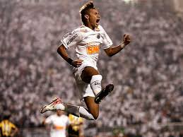
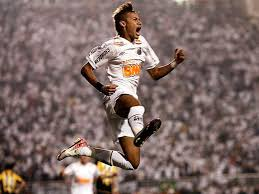

Conquista na Champions League
Postado em 15 agosto 2024
Neymar liderou a equipe do PSG até a final da Champions League, onde conseguiu seu segundo título na competição, confirmando seu status de craque mundial.
Leia maisPostado em 15 agosto 2024
Neymar liderou a equipe do PSG até a final da Champions League, onde conseguiu seu segundo título na competição, confirmando seu status de craque mundial.
Leia maisPostado em 5 julho 2024
Como líder da Seleção Brasileira, Neymar busca seu primeiro título mundial na Copa do Mundo de 2026. Ele já coleciona títulos como a Copa América e o Ouro Olímpico.
Leia maisPostado em 20 setembro 2024
Neymar tem se destacado pelo PSG, com atuações brilhantes em jogos importantes da Liga Francesa e Champions League. Ele continua sendo um dos principais jogadores da equipe.
Leia mais